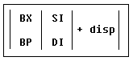
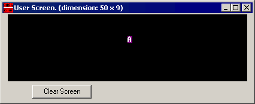

|
[BX + SI] [BX + DI] [BP + SI] [BP + DI] |
[SI] [DI] d16 (variable offset only) [BX] |
[BX + SI] + d8 [BX + DI] + d8 [BP + SI] + d8 [BP + DI] + d8 |
|
[SI] + d8 [DI] + d8 [BP] + d8 [BX] + d8 |
[BX + SI] + d16 [BX + DI] + d16 [BP + SI] + d16 [BP + DI] + d16 |
[SI] + d16 [DI] + d16 [BP] + d16 [BX] + d16 |

BYTE PTR [BX] ; byte access.
or
WORD PTR [BX] ; word access.
assembler supports shorter prefixes as well:
These types of operands are supported:MOV REG, memoryREG: AX, BX, CX, DX, AH, AL, BL, BH, CH, CL, DH, DL, DI, SI, BP, SP. memory: [BX], [BX+SI+7], variable, etc... immediate: 5, -24, 3Fh, 10001101b, etc... |
For segment registers only these types of MOV are supported:MOV SREG, memorySREG: DS, ES, SS, and only as second operand: CS. REG: AX, BX, CX, DX, AH, AL, BL, BH, CH, CL, DH, DL, DI, SI, BP, SP. memory: [BX], [BX+SI+7], variable, etc... |
Here is a short program that demonstrates the use of MOV instruction:ORG 100h ; this directive required for a simple 1 segment .com program. MOV AX, 0B800h ; set AX to hexadecimal value of B800h. MOV DS, AX ; copy value of AX to DS. MOV CL, 'A' ; set CL to ASCII code of 'A', it is 41h. MOV CH, 01011111b ; set CH to binary value. MOV BX, 15Eh ; set BX to 15Eh. MOV [BX], CX ; copy contents of CX to memory at B800:015E RET ; returns to operating system. |
